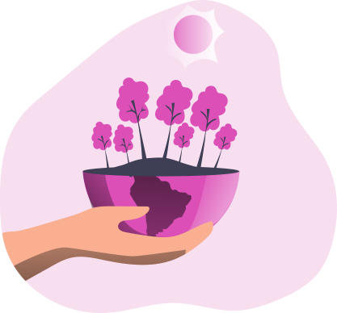
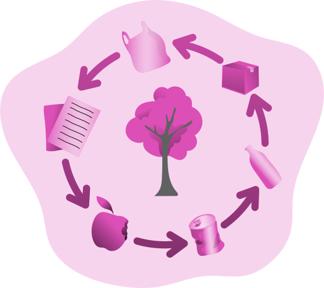
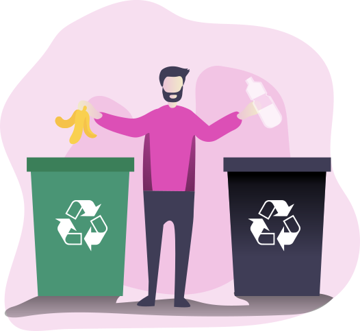

<ng-container *ngIf="!logged">
<ion-content scroll-y="false">
  <ion-slides pager="true" [options]="slideOpts">

    <ion-slide>
      <div class="slide">
        <div class="slide__text">
          
          <h2>Reconoce tus deshechos</h2>
          <p>Obten información sobre tus deshechos y asi conocer su impacto ambiental</p>
        </div>
      </div>
    </ion-slide>

    <ion-slide>     
      <div class="slide">
        <div class="slide__text">
          
          <h2>Aprende a reciclar</h2>
          <p>Aprende a reciclar y diviertete dandole un nuevo uso a tus residuos</p>
        </div>
      </div>
    </ion-slide>

    <ion-slide>
      <div class="slide">
        <div class="slide__text">
          
          <h2>Deshecha correctamente</h2>
          <p>Si no eres bueno para reciclar, obten el contenedor de basura mas cercano a tu ubicación</p>
          <button (click)="finish()">Empezar</button>
        </div>
      </div>
    </ion-slide>

  </ion-slides>
</ion-content>
</ng-container>